The Problem
Parents want to provide their children with quality time, education, and entertainment. One of the most popular ways to do this is through storytelling. After spending time with some kids, I noticed that:
- Kids constantly crave entertainment through activities.
- The more quality time parents can spend with their children, the happier the kids seem.
- Parents often face challenges in terms of expenses and effort in managing books.
- It can be difficult to find books that are appropriate for children's ages and interests.
How might we come up with a solution for parents to address these challenges?
Parents Interview
Q1: What activities do you engage in when spending quality time with your children?
Q2: What are the challenges you encounter when you do story time?
Q3: What type of content are you looking for?
Children Interview
What do you wish when you have story time?
Key Insights
The interviews identified 3 key features that could bring the user experience to another level:
Creativity
Let children co-create stories, sparking their imagination
Engagement
Interactive elements that keep kids and parents invested in story time
Content Customization
Tailor stories to each child's age, interests, and preferences
User Persona
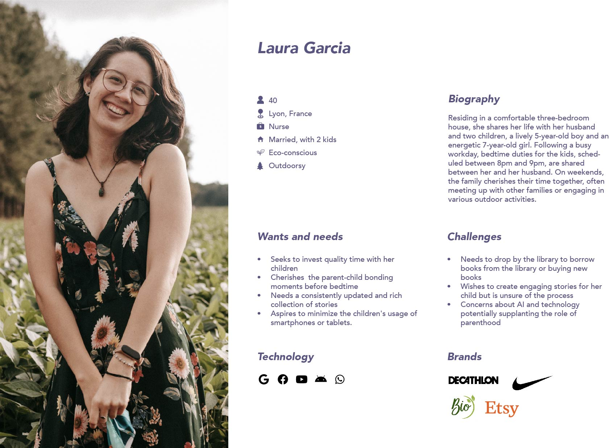
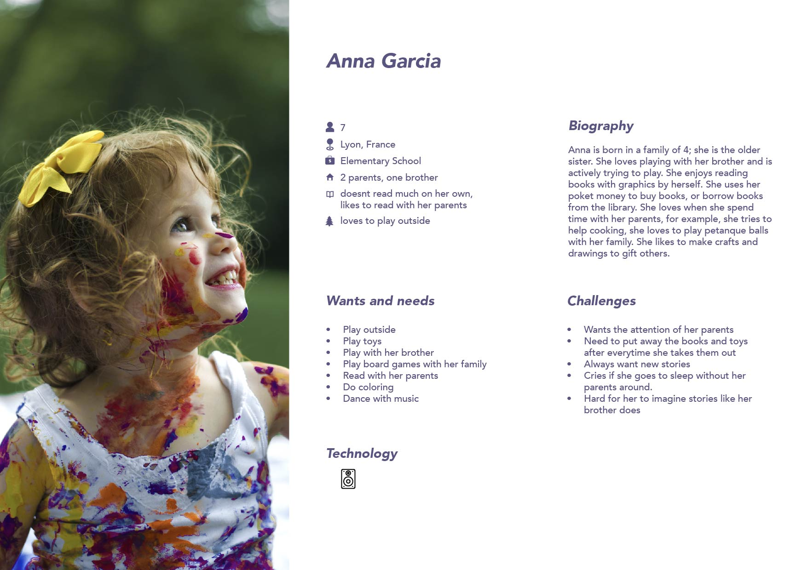
Competitor Analysis
Kids Stories
What works:
- Stories with interactions, animations, and sound effects for engagement.
- Categories based on topics help parents find age-appropriate content.
What doesn't work:
- Menu animations are distracting.
- Story categories mixed with games and promotions.
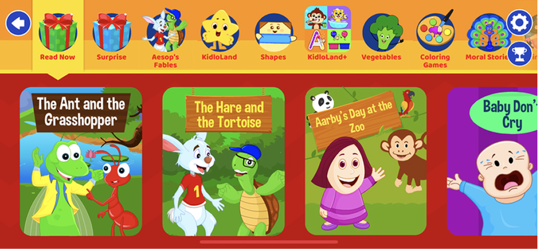
Moshi
What works:
- Multiple accounts per child, catering to individual preferences.
- Customized playlists.
What doesn't work:
- Limited content per category.
- Confusing and repetitive category organization.
- No strong focus on parent-child bonding.
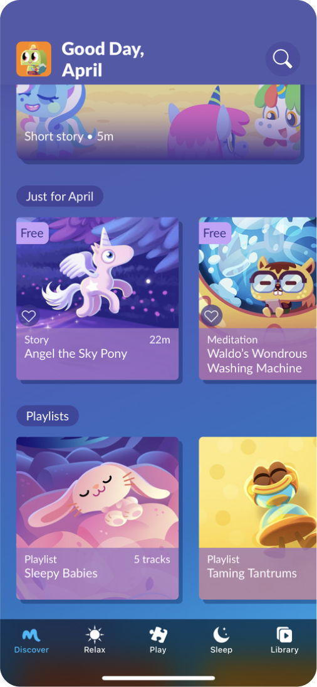
BedtimeBooks
What works:
- Unique combination of bedtime stories, lullabies, and yoga.
- Focused on helping kids sleep.
What doesn't work:
- Limited content variety.
- Lacks active parent-child participation.
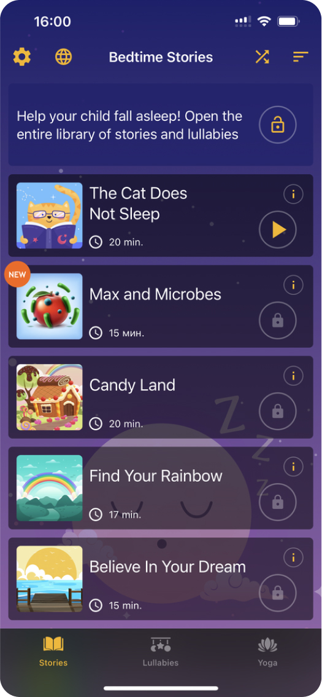
Little Stories
What works:
- Parents can record voice-overs or use default voices.
- Integrates child's name into stories for personalization.
What doesn't work:
- Limited content library.
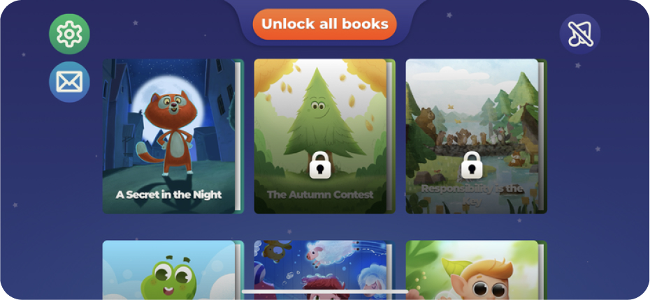
Problem Statement
Parents and children need a storytelling tool that is easy to use, engaging, customizable, and creative, so they can have a meaningful bonding experience during story time.
"How might we design a storytelling tool that is intuitive for both parents and children, offering engaging and customizable features to enhance their story time, thereby creating a deeper and more enjoyable bonding experience?"
User Flow
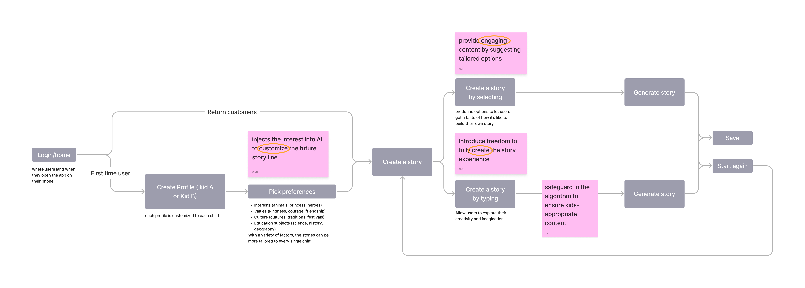
Prototype
Explore the interactive prototype on Figma:
Interact with Prototype →
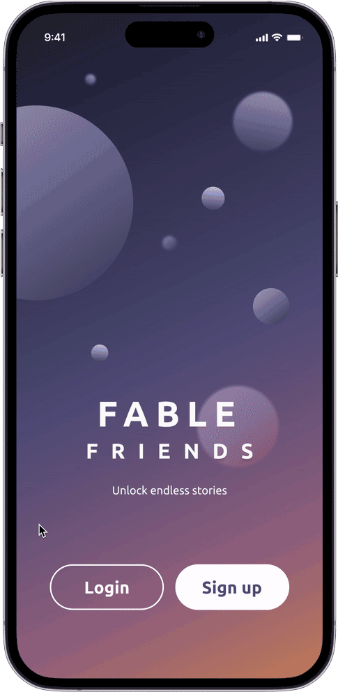
Experience through FableFriends
Front-end Experience:
- Encourage users to create stories by providing diverse topics.
- Create customized experiences for each user based on their interests.
Back-end strategy:
- Minimize content repetition by feeding various prompts.
- Improve our backend algorithms to effectively combine various elements.
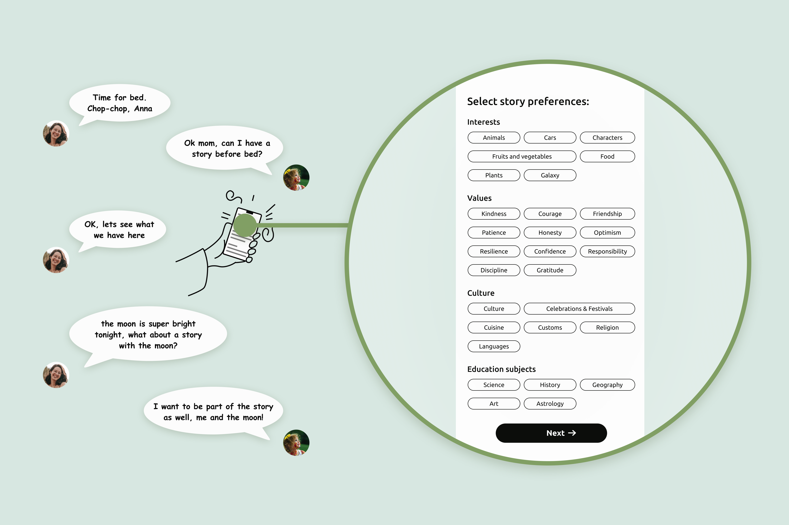
UI Design
I inquired with our interviewers and testers about the specific occasions when they engage in story time. The majority of our users expressed a preference for conducting it just before bed, typically when parents are home from work and children need to be soothed to sleep. As a result, we developed a night stars and galaxy theme. This theme's color palette invokes a sense of mystery, designed to inspire creativity and set the stage for dreams to begin.
Design System
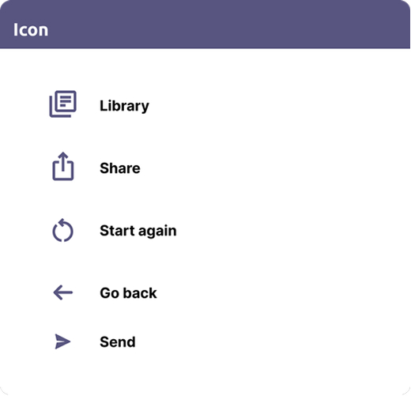
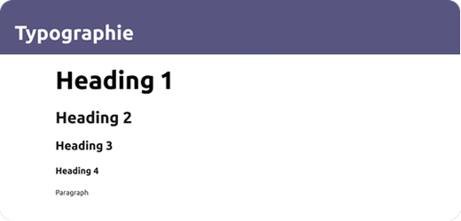
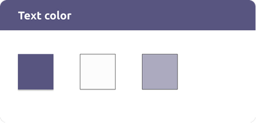
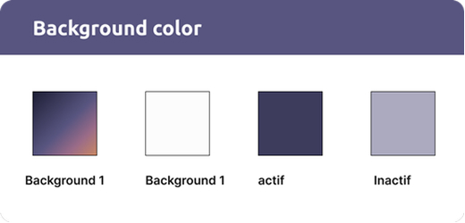
Challenges and Struggles
Challenge 1: Repetitive Story Output
Initial user testing revealed that the AI-generated stories became repetitive and lacked variety. This could lead to user fatigue and a decrease in engagement.
Solution:
- Introduce more categories to the machine learning model to diversify the story output.
- Gather personal preferences and input styles from users to train the machine to produce better-tailored stories.
Challenge 2: Guiding and Regulating User Prompts
Given the current debates surrounding the use of AI, it's crucial to guide users in providing clear and relevant prompts for the AI story-generation process. Ambiguous or off-topic prompts could result in less than satisfactory storytelling outcomes.
Solution:
- Implement a feedback mechanism to inform users when their prompts are not adequately guiding the AI.
Challenge 3: Making AI Work Well for Storytelling
Using AI to generate stories can be tricky because:
- Need a lot of good examples of stories to train the AI on.
- It takes a lot of computer power to train the AI.
- Need to keep updating the AI so it doesn't forget how to tell good stories.
Solution:
- Find ways to get a lot of good examples of stories.
- Use powerful computers to train the AI.
- Keep updating the AI so it stays up-to-date.
Challenge 4: Hide the Mobile Device in Front of Children
Using mobile devices in front of children makes them more interested in the screens than in physical books. Many parents don't want children to be addicted to their phones.
Solution:
- Create a hardware device like Kindle, but with AI powered to create stories for kids.